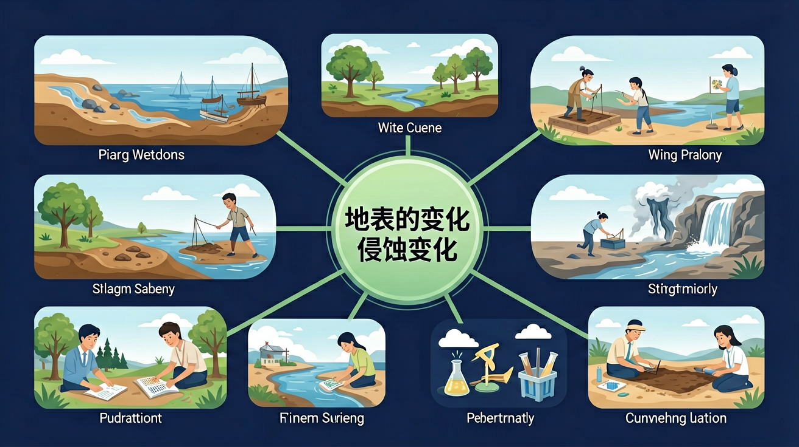

🎯 能说出侵蚀、沉积、地震对地表形态的影响
🎯 能判断常见地貌的主要形成原因（内力/外力）
🎯 能分析简单情境中地表变化的相互作用
❓ 为什么河流总是弯弯曲曲的？
❓ 地震时躲桌子底下真的安全吗？
❓ 沙滩上的沙子是从哪儿来的？
学完这一课，这些问题你都能自信地回答。
峡谷主要是什么力量形成的？
下列哪个是沉积现象？
And：学生见过雨水冲刷泥土
But：但不知道水流能搬走多少土壤
Therefore：理解水蚀是地表'雕刻师'
流动的水会带走土壤和岩石，这叫侵蚀。比如黄河每年带走16亿吨泥沙！这些泥沙被水流搬运到下游，形成冲积平原。侵蚀就像大自然的铲子，把高处'挖掉'填到低处。黄土高原的沟壑就是被雨水冲刷了上万年形成的。
🌍 观察雨后小区花坛：泥土被冲出小沟，水流浑浊说明带着泥沙。如果连续下大雨，花坛边缘会塌陷——这就是微型侵蚀！
黄河泥沙主要被什么力量搬运？
选择或输入后，这节课会围绕你的问题展开。
河口三角洲平原主要是哪种作用形成的？
先选一个，错了正好暴露你的前概念，我们一起纠正。
岩石经风化破碎后，被流水、风、冰川等侵蚀并搬运到别处。当水流变慢、风力减弱时，碎屑沉积下来，形成冲积平原、沙丘、三角洲等地貌。
侵蚀使地表降低，沉积使地表抬高——两者长期作用，塑造了我们看到的山川河谷。
火山喷发是地球内部岩浆、气体喷出地表，可形成火山锥、熔岩台地。地震是地壳快速释放能量引起地面震动，常发生在板块边界。
遇到地震：室内躲坚固桌下护头，远离窗户；室外到开阔地，远离建筑物。了解地表变化有助于防灾减灾。
把现象卡片拖到侵蚀 / 沉积 / 火山 / 地震类别。
拖完 6 项后自动判分。
解释题：黄土高原沟壑纵横，请从降水、植被、流水侵蚀角度解释这种地貌如何形成。
提示：要写出「降水→冲刷→侵蚀」的因果链，可提到植被保护土壤。
拓展题：如果家乡附近发生有感地震，你会采取哪三条应急行动？
迁移任务：寻找家附近一处河岸或山坡，拍照并判断主要是侵蚀还是沉积迹象。
用沙盘制作地形模型，控制水流速度观察变化
地球表面在不断变化：流水、风力、冰川造成侵蚀与沉积；地震、火山带来剧烈变化。侵蚀把岩石土壤带走，沉积把物质堆积下来。人类活动如挖山、拦河也会改变地表，需要评估影响并采取保护措施。
先找出是水、风还是内力作用，再判断地表被削低还是被堆积。解释地貌时用“长期缓慢”与“突发剧烈”区分。
常见误区：常见误区是认为山河地貌一旦形成就永远不变。
河流把上游泥沙带到下游堆积，这种现象属于？
陡坡上大雨后容易发生滑坡，较合理的预防措施是？
河流能切出峡谷，火山能造出新岛，地震让大地颤抖——地球表面从未停止变化。

And：知道泥沙会被水冲走
But：不清楚最终会沉积在哪里
Therefore：认识沉积塑造新地貌
当水流变慢时，携带的泥沙会沉下来，这叫沉积。长江每年在入海口沉积3.9亿吨泥沙，形成崇明岛！沉积就像大自然的积木，一层层堆出三角洲、沙滩。比如上海浦东机场就是建在长江沉积的滩涂上。
🌍 用透明瓶装半瓶水加泥沙，摇晃后静置：粗沙先沉底，细泥最后沉——这就是沉积顺序！
崇明岛是怎么变大的？
And：知道地震会摇晃
But：不明白如何改变地表
Therefore：理解内力瞬间重塑地形
地壳运动积蓄能量，突然释放就是地震。2008年汶川地震使地面隆起9米！地震像巨人抖毯子：有的地方裂开（地裂缝），有的隆起（断层崖）。比如华山就是地壳抬升形成的断块山，悬崖像被刀切过。
🌍 搭积木时突然拍桌子：有的积木倒塌（山体滑坡），有的错位（断层）——这就是微型地震模拟！
地震改变地表主要靠什么？
And：学过侵蚀沉积地震
But：不会判断具体地貌成因
Therefore：综合运用知识解密地表
判断地貌要像侦探找线索：V型谷（水流侵蚀）、冲积扇（泥沙沉积）、断层湖（地壳断裂）。例如云南石林既有水流溶蚀（外力），又因地壳抬升露出地面（内力）。记住口诀：'陡峭多外力，平整多沉积，断裂看内力'。
🌍 观察路边石头：光滑圆润的经历过水流冲刷，有棱角的可能是地震崩落的。
黄土高原的沟壑主要成因是？
用橡皮泥模拟岩层，展示流水侵蚀和风力沉积过程
黄土高原沟壑是雨水冲刷侵蚀的典型结果
火山喷发形成高山 vs 河流沉积形成平原
观察校园里雨水冲刷的痕迹，理解微型侵蚀
解释为什么新建水库下游河岸要加固
先独立作答，再点选项查看对错与错因。
黄河中游黄土高原地区常见的地表形态变化主要是
下列能减缓黄河下游河床抬高的最有效措施是
东营黄河口新生湿地的形成主要体现
当河流流速____时，搬运能力下降会发生沉积。
答案：减慢
流速与搬运能力正相关
地震导致地表裂缝属于____变化（填快速/缓慢）。
答案：快速
地震是瞬时地质作用
（升学题）黄河三角洲形成的主导因素是？
（迁移题）某山区公路常塌方，主要防治措施是？
地震时正确的做法是？
✅ 沙漠沙是风力沉积，河沙多为流水沉积
💡 混淆不同沉积类型
✅ 室内应躲承重墙角落，护住头颈
💡 忽视震动时的坠落物危险
口诀：水冲风带堆成沙，地动山摇内力发
类比：像玩沙子：挖坑是侵蚀，堆城堡是沉积